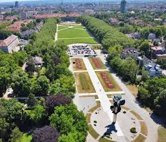
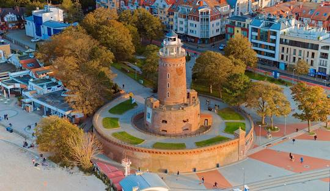
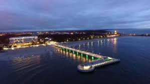
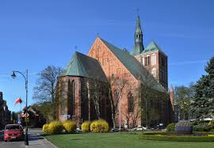
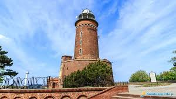
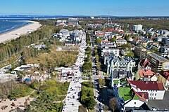
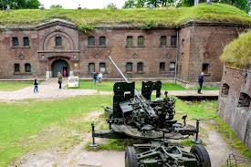
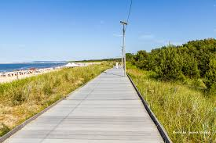
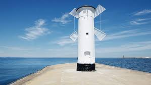

Zachodnioporskie
Najważniejsze miasta
Szczecin

Jezioro Dąbie
Dąbie (do 1945 niem. Dammscher See) – jezioro deltowe w Dolinie Dolnej Odry, w województwie zachodniopomorskim, w całości w granicach Szczecina, osiedla Dąbie. Powierzchnia lustra wody obejmuje 54,08 km²[1], co stanowi 4. miejsce w Polsce i 1. w województwie. Przez jezioro przebiega tor wodny z portu Schwedt do Zatoki Pomorskiej. Nad Dąbiem zlokalizowanych jest kilka obiektów żeglarskich.
Jasne Błonia
Plac Jasne Błonia im. Jana Pawła II – szeroki zieleniec, znajdujący się na północ od gmachu szczecińskiego Urzędu Miejskiego, ograniczony ulicami Michała Ogińskiego, Karola Szymanowskiego i Stanisława Moniuszki. Od północnego zachodu przechodzi w Park Kasprowicza.
Wały Chrobrego
Wały Chrobrego (pierwotnie niem. Hakenterrasse, w znaczeniu dosłownym: Taras Hakena) – taras widokowy o długości ok. 500 m w Szczecinie na skarpie wzdłuż Odry. Słynne założenie urbanistyczno-architektoniczne współtworzące, wraz z Muzeum Narodowym w Szczecinie, Zamkiem Książąt Pomorskich i katedrą pw. św. Jakuba, nadodrzańską sylwetę miasta, widoczną z głównych tras dojazdowych od wschodu biegnących przez mosty i wiadukty. Zaprojektowane i wzniesione według koncepcji Wilhelma Meyera-Schwartau w latach 1902–1921 z inicjatywy nadburmistrza Hermanna Hakena, na cześć którego został taras pierwotnie nazwany.
Kołobrzeg
Molo
Molo w Kołobrzegu – żelbetowe molo w Polsce, w Dzielnicy Uzdrowiskowej Kołobrzegu. Zlokalizowane jest na przedłużeniu ulicy Mickiewicza, przy sanatorium Bałtyk i bulwarze Jana Szymańskiego, w pobliżu Parku im. Stefana Żeromskiego (zdrojowego).
Bazylika
Bazylika konkatedralna Wniebowzięcia Najświętszej Maryi Panny w Kołobrzegu – kościół farny w Kołobrzegu. Świątynia rzymskokatolicka wybudowana w XIV wieku w stylu gotyckim, halowa, pięcionawowa. Od 1972 konkatedra diecezji koszalińsko-kołobrzeskiej.
Latarnia
Latarnia Morska Kołobrzeg – latarnia morska na polskim wybrzeżu Bałtyku, nad Zatoką Pomorską położona w mieście Kołobrzeg, w województwie zachodniopomorskim[2]. Latarnia znajduje się pomiędzy Latarnią Morską Niechorze (około 34 km na zachód), a Latarnią Morską Gąski (około 22 km na wschód). Latarnia jest administrowana przez Urząd Morski w Szczecinie (przed 1 kwietnia 2020 roku przez Urząd Morski w Słupsku) i jest udostępniona do zwiedzania
Świnoujście
Fort Gerharda
doskonale zachowane pruskie fortyfikacje. Można tu przeżyć historyczną przygodę i poczuć klimat dawnych czasów.
Plaża i promenada
Świnoujście słynie z jednej z najpiękniejszych plaż w Polsce. Szeroka, piaszczysta, z łagodnym wejściem do morza, idealna na spacery i relaks. Promenada pełna kawiarni i restauracji dodaje uroku.
Stawa Młyny
charakterystyczny biały wiatrak na końcu falochronu, symbol miasta. Świetne miejsce na spacer i zdjęcia, zwłaszcza o zachodzie słońca. 🌅